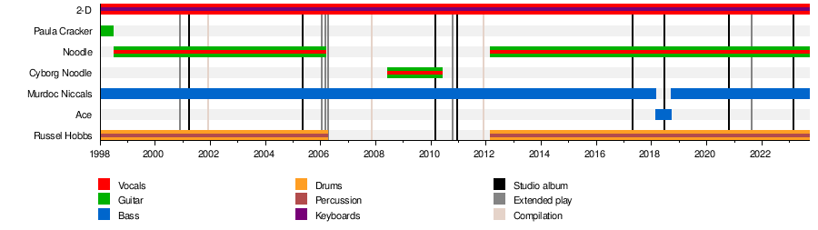

Gorillaz
Gorillaz are a British virtual band formed in 1998 by musician Damon Albarn and artist Jamie Hewlett, from London. The band primarily consists of four fictional members: 2-D (vocals, keyboards), Murdoc Niccals (bass guitar), Noodle (guitar, keyboards, vocals) and Russel Hobbs (drums). Their universe is presented in media such as music videos, interviews, comic strips and short cartoons. Gorillaz' music has featured collaborations with a wide range of featured artists, with Albarn as the only permanent musical contributor.
With Gorillaz, Albarn departed from the distinct Britpop sound of his band Blur, exploring a variety of musical styles including hip hop, electronic and world music.[1] The band's 2001 debut album, Gorillaz, which features dub, Latin and punk influences, went triple platinum in the UK and double platinum in Europe, with sales driven by the success of the lead single, "Clint Eastwood". Their second studio album, Demon Days (2005), went six times platinum in the UK[2] and double platinum in the US and spawned the successful lead single "Feel Good Inc."[3][4][5] The band's third album, Plastic Beach (2010), featured environmentalist themes, synth-pop elements[6] and an expanded roster of featured artists. Their fourth album, The Fall, was recorded on the road during the Escape to Plastic Beach Tour and released on 25 December 2010.
History
Creation (1998-2000)
Musician Damon Albarn and comic artist Jamie Hewlett met in 1990 when guitarist Graham Coxon, a fan of Hewlett's work, asked him to interview Blur, which Albarn and Coxon had recently formed.[14] The interview was published in Deadline magazine, home of Hewlett's comic strip Tank Girl. Hewlett initially thought Albarn was "arsey, a wanker;" and despite becoming acquaintances with the band, they often did not get on, especially after Hewlett began seeing Coxon's ex-girlfriend Jane Olliver.[14] Despite this, Albarn and Hewlett started sharing a flat on Westbourne Grove in London in 1997.[15] Hewlett had recently broken up with Olliver and Albarn was at the end of his highly publicised relationship with Justine Frischmann of Elastica.[14]
Gorillaz (2001–2002)
From 1998 to 2000, Albarn recorded for Gorillaz' self-titled debut album at his newly opened Studio 13 in London as well as at Geejam Studios in Jamaica.[21] The sessions resulted in the band's first release, the EP Tomorrow Comes Today, released on 27 November 2000. This EP consisted mostly of tracks which later appeared on the album, and it also included the band's first music video for "Tomorrow Comes Today", which introduced the virtual band members for the first time.
Demon Days (2005–2006)
Albarn spent the majority of 2003 on tour with Blur in support of their newly released album Think Tank; however, upon completion of the tour, he decided to return to Gorillaz, reuniting with Hewlett to prepare for a second album. Hewlett explained that the duo chose to continue Gorillaz to prove that the project was not "a gimmick": "If you do it again, it's no longer a gimmick, and if it works then we've proved a point."[36] The result was Demon Days, released on 11 May 2005. The album was another major commercial success, debuting at No. 1 on the UK Albums Charts and No. 6 on the US Billboard 200, and has since gone six times platinum in the UK,[2] double platinum in the United States,[37] and triple platinum in Australia,[38] outperforming sales of the first album and becoming the band's most successful album to date.[39] The album's success was partially driven by the success of the lead single "Feel Good Inc." featuring hip-hop group De La Soul, which topped Billboard's Alternative Songs chart in the U.S. for eight consecutive weeks and was featured in a commercial for Apple's iPod.[40] The album was also supported by the later singles "Dare", "Dirty Harry", and the double A-side "Kids with Guns" / "El Mañana".
Plastic Beach and The Fall (2010–2012)
Albarn and Hewlett's next project together was the opera Monkey: Journey to the West based on the classical Chinese novel Journey to the West, which premiered at the 2007 Manchester International Festival. While not officially a Gorillaz project, Albarn mentioned in an interview that the project was "Gorillaz, really but we can't call it that for legal reasons".[59]
Band Members
Virtual Members
- Murdoc Niccals – bass (1998–present), drum machine (2008–present)[a]
- 2-D – vocals, keyboards (1998–present)
- Noodle – guitar, vocals (1998–2006; 2012–present)
- Russel Hobbs – drums, percussion, drum machine (1998–2006; 2012–present)
Former virtual members
- Paula Cracker – guitar (1998)
- Cyborg Noodle – guitar, vocals (2008–2010)
- Ace – bass (2018)
Murdoc Faust Niccals (born Murdoc Alphonce Niccals) is the bassist for the band. He is voiced by Phil Cornwell and was created by Damon Albarn and Jamie Hewlett.
Stuart Harold "2-D" Pot provides the lead vocals and plays the keyboard for the band. 2-D's singing voice is provided by Blur frontman Damon Albarn on Gorillaz' recordings and performances; his speaking voice was provided by actor Nelson De Freitas in various Gorillaz direct-to-video projects such as Phase One: Celebrity Take Down and Phase Two: Slowboat to Hades. In 2017, Kevin Bishop was cast as the new speaking voice of 2-D.[235] He was created by Albarn and Jamie Hewlett in 1998.
Noodle provides the lead guitar and keyboards, as well as some occasional vocals for the band.[236] Like all other band members of Gorillaz, she was created in 1998 by Damon Albarn and Jamie Hewlett. Originally from Japan, Noodle has been voiced by Haruka Kuroda,[237][188] Miho Hatori of Cibo Matto,[238][239] and Haruka Abe.[240]
Russel Hobbs was originally conceptualized by Jamie Hewlett and Damon Albarn in 1998 as a metafictional representation of the hip hop aspects of Gorillaz, embodying the spirit of the bands' collaborations with various rappers over the years.[237] He is referenced in the lyrics to the Gorillaz track "Clint Eastwood". He was originally inspired by Hewlett's love for hip hop artists like Ice Cube[241] (the cousin of rapper Del the Funky Homosapien, who raps on "Clint Eastwood" and "Rock The House" as Del the Ghost Rapper).[242] Russel's speaking voice is provided by drummer and DJ Remi Kabaka Jr., who has been an actual drummer and producer for Gorillaz since Humanz in 2017.[7][87] Russel's fictional backstory of being possessed by the spirits of dead musicians is what originally inspired the usage of collaborators and guests on Gorillaz' albums.[243][244]

Touring Members
- Damon Albarn – lead vocals, keyboards, rhythm guitar, piano, melodica
- Mike Smith – keyboards
- Cass Browne – drums, percussion, drum machine
- Darren Galea – turntables
- Simon Katz – lead guitar
- Junior Dan – bass (2001)
- Roberto Occhipinti – bass (2002)
See Also
Wikipedia source